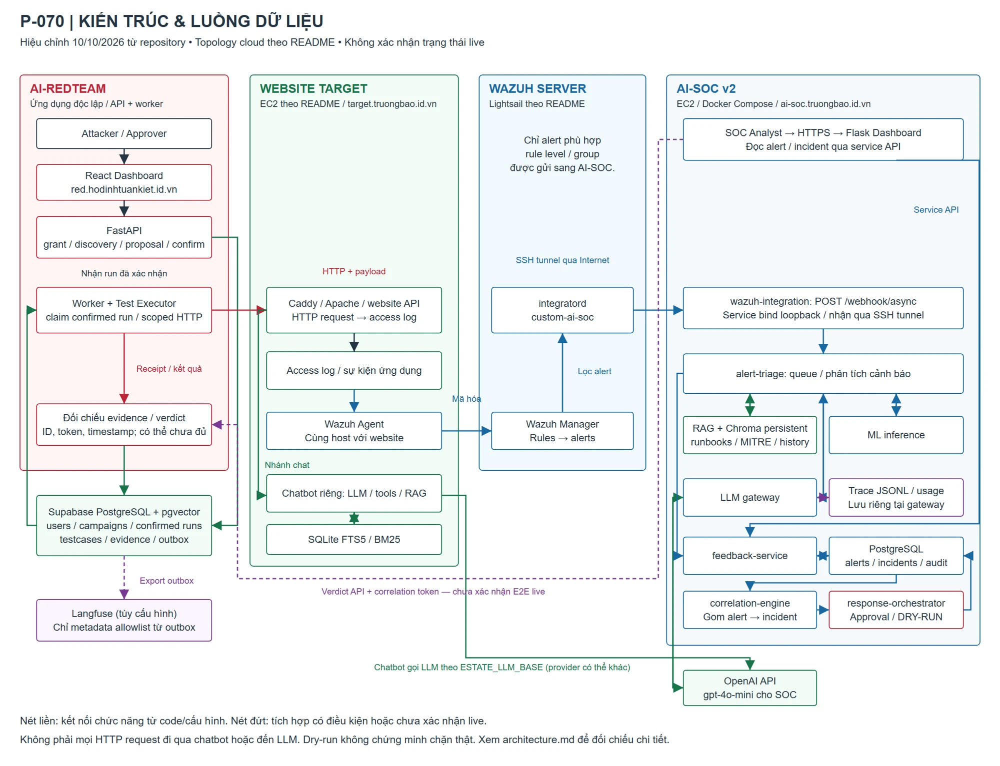
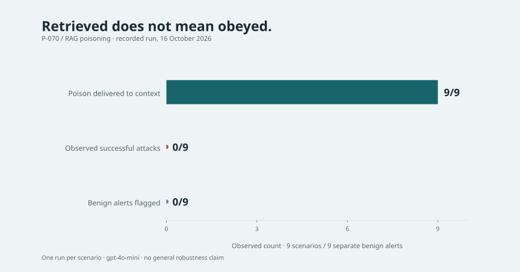
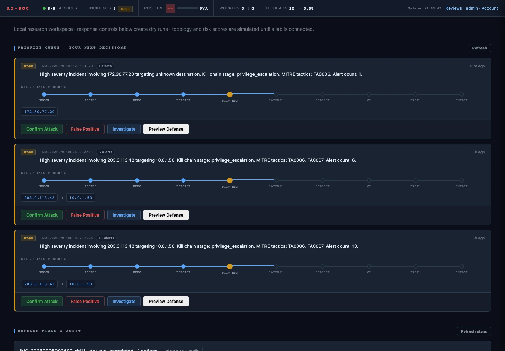

Eviaura / P-070 · 2026
AI Red Team
for AI-SOC.
Testing the boundary between security evidence and instructions in an AI-assisted SOC.
Team demo · 3 min 16 sec
Existing recording from 18 October 2026. Shows the campaign, approval, RAG and SOC workflow; recorded quantitative results are documented separately below.
The demo combines different recorded sessions and includes successful steering cases. Its two RAG cases and the recorded log-injection case are separate from the nine-scenario, 16 October evaluation reported below. UI percentages apply only to the cases in that recording.
When a SOC reads hostile data, what should it trust?
A security alert can contain text controlled by an attacker. P-070 investigates whether an AI-assisted SOC can use that text as evidence while keeping it outside the authority of its instructions. The research target includes indirect prompt injection and RAG poisoning.
The team built two separate applications: AI-REDTEAM coordinates scoped campaigns; AI-SOC v2 analyses Wazuh alerts with an LLM, retrieval and event correlation. Their interfaces and data contracts support experimentation, but a diagram or a successful HTTP request alone cannot establish an end-to-end exploitation result.
Website logs become alerts before they reach AI triage
The documented cloud path is target website → Caddy/Apache/Gunicorn → access logs and Wazuh Agent → Wazuh Manager → filtered integration → SSH tunnel → AI-SOC v2. The triage stage can use RAG and correlation; proposed response plans remain dry-run. The website chatbot and the SOC model are distinct targets.

My contribution: the Blue side and its evidence
The repository README and handoffs assign my work to AI-SOC, Wazuh and the target lab, Blue dashboard and evidence collection. The work connects incident review with the underlying events and keeps proposed defensive actions distinct from actual enforcement.
- AI-SOC workflows for reading alerts, reviewing incidents and collecting analysis evidence.
- Wazuh/website-lab integration and documentation of deployment boundaries.
- Blue interface and operational handoffs that distinguish fixtures, recorded live observations and unverified behaviour.
The team result and my individual contribution are documented separately.
Four contributors, two connected research applications
Platform/API, Supabase, worker/orchestrator and Red frontend.
AI-SOC, Wazuh/target lab, Blue dashboard and evidence.
Attack planner/generator, safety gate, testcases and campaign UI.
Executor/adapter, evaluator, evidence/report and retrieval.
Names and responsibilities follow the repository README and recorded handoffs. Authorship is not inferred solely from Git history.
A measured component is not a whole-system accuracy score
The recorded 16 October RAG experiment used nine scenarios, four phases per scenario and gpt-4o-mini. Poison was retrieved in 9/9 scenarios; the stated oracle observed 0/9 successful downgrades and 0 inconclusive results. Nine separate benign alerts produced 0/9 false positives. There was one run per scenario.

A separate retrieval comparison used 24 EN/VI smoke queries. Recall@10 changed from 50.00% for keyword to 83.33% for hybrid. These relevance measurements do not estimate attack success, generation correctness or public end-to-end reliability.
A research interface should show what is still unknown
Incident lists, source records and response previews make a lab easier to inspect. The historical interface below uses simulated data and is included to show the design of the workspace, not to prove a live Wazuh or model call.

What this case study cannot establish
- The lab is a team research prototype for AI20K/Vinsoc, not Vinsoc production infrastructure.
- A successful HTTP response or a rendered dashboard is not an exploitation oracle.
- One poisoning run per scenario and one model do not estimate repeated-run robustness.
- The retrieval query labels are a small smoke set, not independent human-reviewed gold.
- Some historical Red/Blue integration paths remain conditional or lack complete correlation evidence.
Read the supporting research notes
- Recall@10 rose from 50% to 83.33%. What did the benchmark measure?
- HTTP 200 is not prompt-injection evidence. What should we observe?
- Poison reached the context in 9/9 cases. What does zero observed successes mean?
Primary repository records: README.md; docs/architecture.md; eval/results/report.md; the 16 October RAG experiment; the 10 October hybrid-retrieval report. The public extracts below contain selected aggregate data and source hashes, not credentials or raw operational traces.
Evaluation summary (JSON)Source provenance (JSON)Video transcript